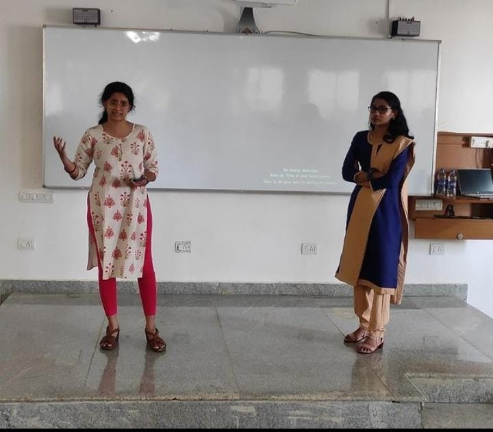
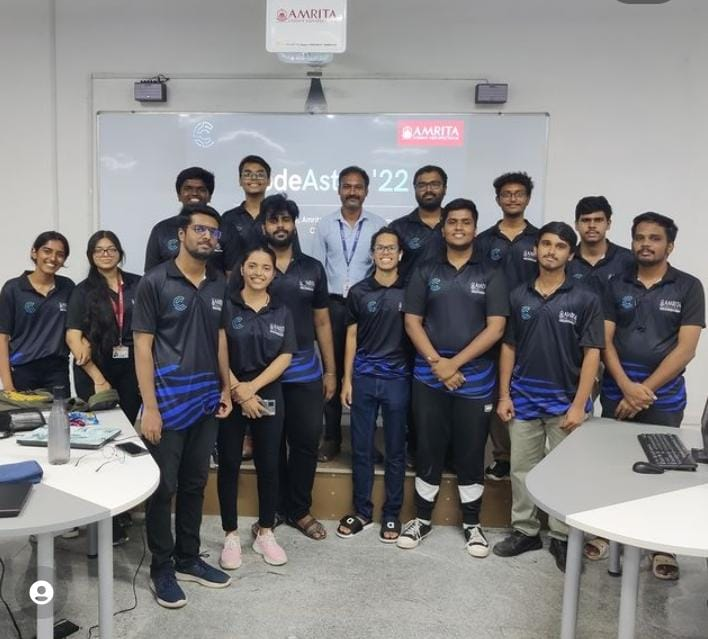
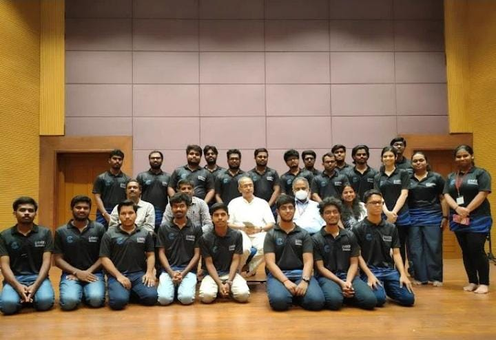
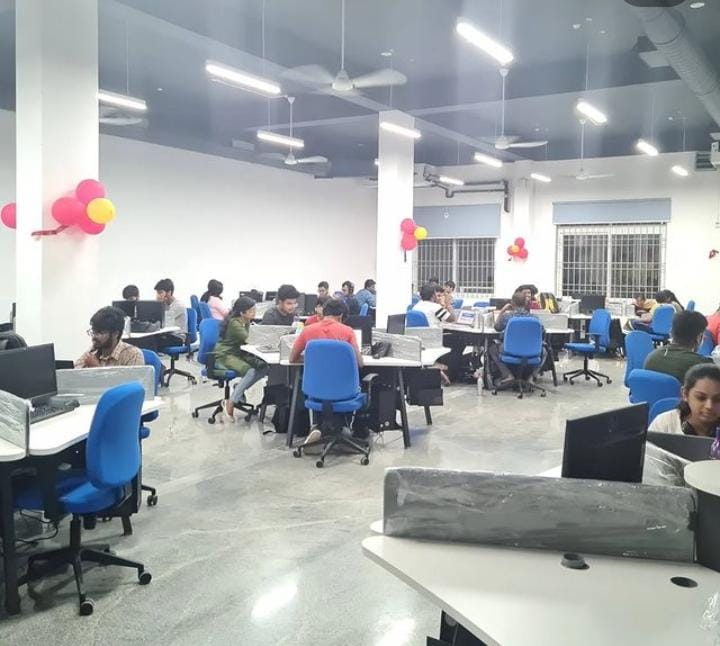
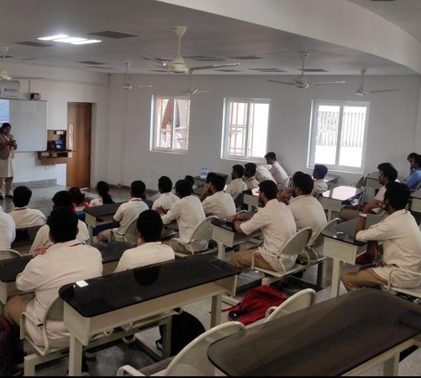
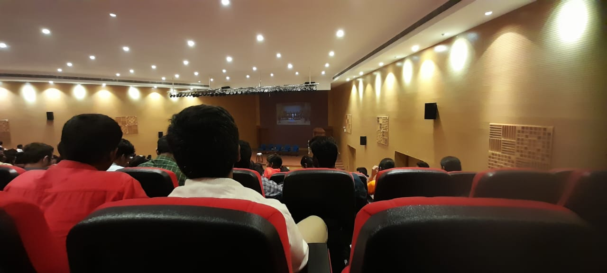
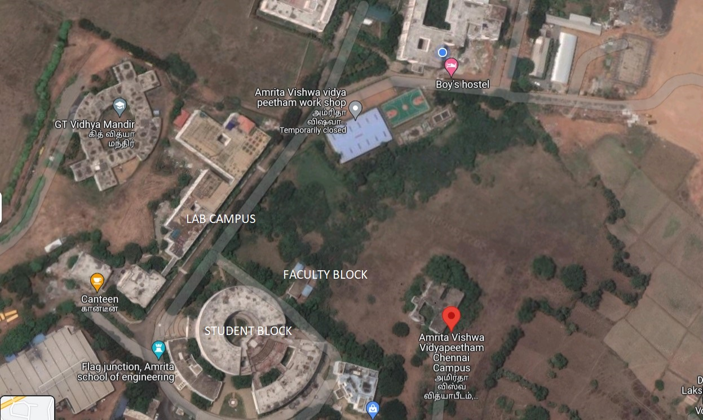

DINAKAR S CH.EN.U4CYS21013

| About Amrita Viswa Vidyapeetham Amrita Vishwa Vidyapeetham (Amrita) is a multi-disciplinary Deemed-to-be University that offers more than 250 Academic Programs across 7 Campuses in four South Indian states of Kerala. Tamil Nadu. Karnataka and Andhra Pradesh. The renowned humanitarian leader. Sri Mata Amritanandamayi Devi, popularly known as Amma, is the Chancellor and guiding light of Amrita Vishwa Vidyapeetham. Spread over 1200 acres with 100 lacs square feet of built-up space. Amrita is the 5 best university in the National Institutional Ranking Framework (NIRF) rankings 2022. |
||
| About Amrita School of Computing, Chennai Campus The capital city of Tamil Nadu, Chennai embeds a brilliant blend of tradition, art, technology, industrialization, education, and development, making it one of India's most important metropolitan cities. The school is aesthetically placed between the Arani and Kosasthalaiyar rivers, spread out on a sprawling 13.55 acres of land with a built-up area of 24,956 sqm, where the dreams of countless engineering aspirants find realization. | ||
| Amrita CyberNation’22 Cybernation is a tech fest and envisions providing a platform for faculty members, research scholars, students, and industry experts who are passionate about cybersecurity to unite and share their innovative ideas while learning about how technology can be integrated with myriad other fields. |
||
Events October '22
|
Recent Events Photos |
|  |  |  |
|  |  |  |
|  |